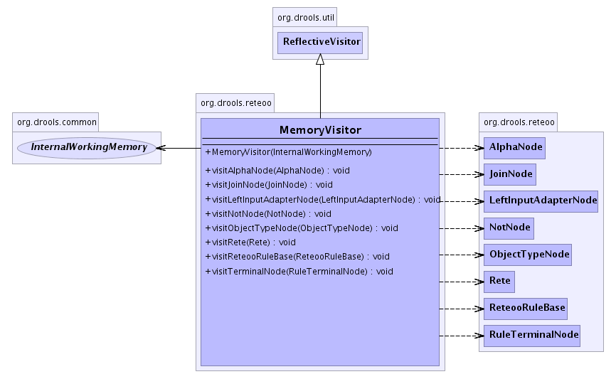

org.drools.reteoo
Class MemoryVisitor
java.lang.Object
 org.drools.util.ReflectiveVisitor
org.drools.reteoo.MemoryVisitor
org.drools.util.ReflectiveVisitor
org.drools.reteoo.MemoryVisitor
- All Implemented Interfaces:
- Visitor
public class MemoryVisitor
- extends ReflectiveVisitor
-
- 
| Methods inherited from class java.lang.Object |
clone, equals, finalize, getClass, hashCode, notify, notifyAll, toString, wait, wait, wait |
MemoryVisitor
public MemoryVisitor(InternalWorkingMemory workingMemory)
- Constructor.
visitReteooRuleBase
public void visitReteooRuleBase(ReteooRuleBase ruleBase)
- RuleBaseImpl visits its Rete.
visitRete
public void visitRete(Rete rete)
- Rete visits each of its ObjectTypeNodes.
visitObjectTypeNode
public void visitObjectTypeNode(ObjectTypeNode node)
visitAlphaNode
public void visitAlphaNode(AlphaNode node)
visitLeftInputAdapterNode
public void visitLeftInputAdapterNode(LeftInputAdapterNode node)
visitJoinNode
public void visitJoinNode(JoinNode node)
visitNotNode
public void visitNotNode(NotNode node)
visitTerminalNode
public void visitTerminalNode(RuleTerminalNode node)